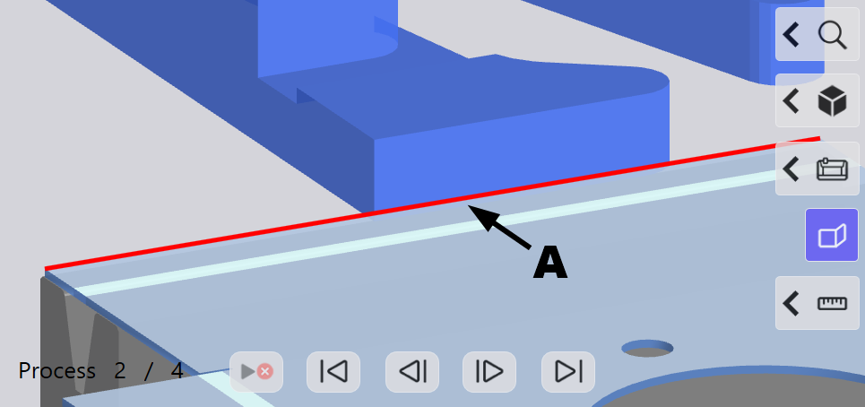
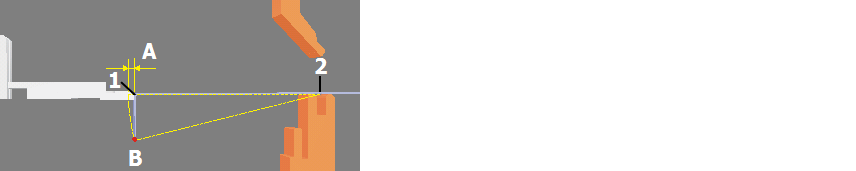

Ce dialogue permet de repositionner ou de redéfinir les butées pour le processus de pliage sélectionné. Les combinaisons invalides d'options de butée sont signalées par un symbole d'erreur.
On distingue deux types de doigts de butée supplémentaires :
- Doigt de butée standard
- Doigts de butée pour butées d'angle
Ce doit de butée n'est pas utilisable pour les butées d'angle. Sur la plupart des machines, il peut être combiné avec le doigt de butée pour les butées d'angle.
Fig.: Présentation de principe du doigt de butée standard

Est utilisable pour toutes les butées.
Fig.: Représentation de principe du doigt de butée pour les butées d'angle

Info: Les explications suivantes s'appuient sur le doigt de butée pour les butées d'angle, car c'est celui qui est utilisé généralement. A l'exception de la butée d'angle, toutes les descriptions s'appliquent également au doigt de butée standard.
Options
Cette option permet de positionner ou d'immobiliser le bras de butée correspondant.
Si l'option Immobilisé est activée, toutes les autres options du doigt de butée, à l'exception de l'option Arête de butée Arête sur la pièce à plier pressée pour le positionnement précis sur un point de butée du doigt de butée., sont désactivées.
NOTE: Lorsque cette option Immobilisé est activée et qu'une autre arête de butée est sélectionnée pour ce doigt de butée, l'option Immobilisé est alors désactivée et le doigt de butée est placé sur l'arête de butée sélectionnée.
Cette option accroche le doigt de butée sur l'angle correspondant. Au moins 4 points de butée sont requis pour permettre une fixation précise de la pièce (A).

Fig.: Points de butée lors de l'accrochage des angles
NOTE: Cette option n'est possible que si un doigt de butée est monté pour les butées d'angle.
Sélectionnez cette option avec les arêtes rondes ou les butées d'angles.
Si aucune butée d'angle n'est possible avec la position actuelle du doigt d'angle, le remplacement du doigt de butée sur les bras de butée permet éventuellement de réaliser une butée.
Le bouton Affecter définit l'arête de butée sur laquelle la butée doit être définie. Toutes les arêtes de butée possibles sont marquées par une ligne noire.
Info: Lorsque vous sélectionnez le bouton Affecter, vous zoomez sur l'arête de butée marquée en rouge (A).
Fig.: Affecter l'arête de butée

Affecter les arêtes à une butée
- Sélectionner le bouton Affecter.
- Tapoter sur l'arête de butée à laquelle les butées doivent être affectées.
- Définir dans la boîte de dialogue Valider pour quelles positions la butée doit être validée
Tip: S'il n'est pas possible de définir une butée avec le point de butée sur le doigt de butée, sélectionner un autre point sur le doigt de butée avec l'option Point de référence.
Cette option détermine la position à laquelle les doigts de butée entrent en contact avec l'arête de butée de la pièce à plier. Par défaut, un doigt de butée droit et un doigt de butée pour les butées d'angle sont définis pour chaque bras de butée.
La sélection du point de référence peut être réalisée dans la boîte de dialogue Paramètres ou à l'aide du bouton Modifier.
- Modifier
Le point de référence est sélectionné à partir du numéro de référence sur le doigt de butée. Le zoom est appliqué sur les doigts de butée avec les numérotations des points de référence.
Butée d'angle (A)
| 0/4 | La pièce à plier se trouve sur le doigt de butée et peut entrer en contact avec lui. Le point de butée peut également être utilisé pour une butée d'angle. |
| 1/2 | La pièce de butée peut uniquement entrer en contact. Lors de la sélection du point de butée (2), le doigt de butée peut être positionné sur des côtés de pliage courts à l'aide de l'outil inférieur. |
| 3 | La pièce à plier se trouve sur le bras de butée et peut entrer en contact au niveau du boulon. |
| 5/6 | La pièce de butée peut uniquement entrer en contact. Lors de la sélection du point de butée (6), le doigt de butée peut être positionné sur des côtés de pliage courts à l'aide de l'outil inférieur. |
Butée droite (B)
| 7 | La pièce à plier se trouve sur le doigt de butée et peut entrer en contact avec lui. |
| 8/9 | La pièce de butée peut uniquement entrer en contact. Lors de la sélection du point de butée (9), le doigt de butée peut être positionné sur des côtés de pliage courts à l'aide de l'outil inférieur. |
Fig.: Niveaux de référence sur le doigt de butée

Cette option permet d'activer ou de désactiver le capteur sur le doigt de butée. L'option n'est activée que si un capteur est présent sur le doigt de butée.
Le capteur détecte si la tôle est bien en contact avec le doigt de butée. Si la tôle n'est pas bien en contact avec le doigt de butée, le processus de pliage ci-après ne peut pas être exécuté.
Cette option définit la mesure permettant de retirer le doigt de butée avant l'exécution du pliage par l'arête de butée. Les retraits sont utilisés pour éviter les collisions entre la pièce à plier et le doigt de butée pendant le processus de pliage.
Les retraits doivent être définis lorsqu'une pièce déjà pliée est en contact sur le doigt de butée (1), dont le côté pointe en bas (B).
Fig.: Utilisation d'un retour (A) avec une butée avec un côté plié vers le bas

Légende :
| A | Distance minimum du retour du doigt de butée |
| B | Trajet du point d'extrémité du côté |
| 1 | Arête de butée |
| 2 | Point de rotation du côté (B) pendant le pliage |
NOTE: La valeur de retour minimale lors de l'affectation automatique des butées est de 10 mm.
Cette option définit la position du doigt de butée sur l'arête de butée de la pièce à plier. Le positionnement du doigt de butée peut intervenir de deux manières.
- En spécifiant la position dans le champ Position Z.
- Par déplacement dans la vue 3D.
Boutons
- Valider les conflits
- Avertissements
- Erreur
Des avertissements et des erreurs peuvent être acquittés pour le processus, le pliage, la station ou la pièce.
Cette fonction permet de valider l'avertissement du processus de pliage sélectionné. L'avertissement est affiché à la suite du nom de l'outil comme symbole.
Tip: Utilisez cette fonction pour les avertissements qui peuvent être ignorés pour le processus de pliage sélectionné. La validation signale au système que l'outil peut être utilisé pour le processus de pliage.
Cette fonction permet d'acquitter les erreurs des outils affectés.
Info: La fonction n'est activée que si l'erreur en cours peut être acquittée.